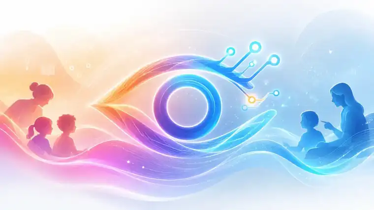

המצלמה שמעידה
תיעוד, הרתעה ויכולת לבדוק מה התרחש אחרי אירוע.
השאלה: מה קרה?
◉ תצפית↗ מדידה✓ פעולה⌁ דפוסממצלמה שמתעדת את מה שקרה — למערכת שעוזרת לצוות להבין מה קורה, למה זה קורה ומה נכון לעשות.
שכבת AI שהופכת את המציאות החינוכית לתצפיות, הקשר, דפוסים, פעולות ומדדים שאפשר ללמוד מהם.
תיעוד, הרתעה ויכולת לבדוק מה התרחש אחרי אירוע.
השאלה: מה קרה?אפשרויות צפייה ושקיפות רחבות יותר, בכפוף לתנאים שקובע החוק.
השאלה: מי יכול לראות?שכבת AI שמארגנת את המציאות לתצפיות, הקשר, דפוסים והכוונה מקצועית.
השאלה: מה אפשר להבין — ומה כדאי לעשות?איך עוברים מתיעוד ותגובה למניעה, מדידה ולמידה מערכתית — תוך שמירה על פרטיות ואחריות.
איך הופכים את מה שקורה ביום־יום לתובנה ברורה, פעולה מקצועית ומדידה של מה באמת השתנה.
לא רק זיהוי אירוע — אלא תהליך מקצועי שמחבר בין מה שקרה, ההקשר, הדפוס, מה אפשר לנסות ומה השתנה.
במקום להסתפק ב"נראה שזה השתפר", עין צופיה בונה תמונה מדידה של התהליך.
המספרים כאן מדגימים את שיטת המדידה ואינם תוצאה מחקרית של עין צופיה.
תובנות, הקשר והכוונה פרקטית בתוך יום עבודה עמוס.
ABC, תדירות, דפוסים ומעקב מהחיים עצמם — לא רק מהקליניקה.
מידע רלוונטי לילד שלהם, בלי להפוך אותם לצופים בשעות של וידאו.
מגמות, צרכים, מוקדי הצלחה והקצאת משאבים חכמה יותר.
EMMA מתווכת בין המידע לבין האדם: מסכמת, מחברת הקשר, מזהה דפוסים, מציעה שאלות מקצועיות ואפשרויות פעולה — בשפה שמתאימה למשתמש.
השנים הראשונות הן תקופה מכרעת להתפתחות, למידה ותפקוד. למדינה יש אינטרס ציבורי וכלכלי לזהות צרכים מוקדם, לחזק צוותים, להפנות משאבים בזמן ולמדוד מה באמת עובד.
לזהות דפוסים שראויים לתשומת לב מקצועית לפני שהם מתבססים או מחמירים.
לתת לצוות שנמצא עם הילד כל יום יכולת לראות, להבין וללמוד מהשטח.
למקד הדרכה, טיפול ופיקוח במקום שבו הנתונים מצביעים על צורך.
לא רק כמה כסף הושקע — אלא מה השתנה בפועל בעקבות ההשקעה.
מחקר, תמיכה, פיילוטים ומערכות פעילות הם הבסיס שממנו אנחנו ממשיכים לבנות Evidence.
הפיתוח קיבל תמיכה ומענק מו״פ, לפי נתוני החברה.
לאתר הרשמי ↗ליווי ומחקר אקדמי סביב הפיילוט והמודל החינוכי.
לאתר הרשמי ↗מערכת שנולדה מתוך עבודה בשטח ולא מתוך מעבדה מנותקת.
מערכות ודוחות עומק מותאמים לאנשי מקצוע ולתהליכי עבודה שונים.
שכבת AI שמתרגמת מידע לתובנה ולדיאלוג מותאם קהל.
לאתר EMMA ↗דיוק, שימושיות והשפעה נמדדים בנפרד — ולא מוחלפים בסיסמאות.
המערכת אינה מיועדת לאבחן ילד, לקבוע בוודאות מה הוא מרגיש או לקבל החלטה מקצועית במקום האדם.
איש חינוך ויזם שמגיע מהשטח. מוביל את החזון: טכנולוגיה שמחזקת את האדם שנמצא עם הילד.
יצירת קשר ↗מוביל את תרגום הידע המקצועי למוצר, תהליכי ניתוח והצגה מותאמת לאנשי מקצוע.
LinkedIn ↗יזם ומנהל טכנולוגי מנוסה, עם ניסיון בבניית צוותים ומערכות בקנה מידה גדול.
LinkedIn ↗אנחנו מחפשים שותפים שרוצים לבדוק, למדוד ולהטמיע — לא רק לדבר על AI בחינוך.